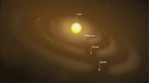

Our Sun is a 4.5 billion-year-old star – a hot glowing ball of hydrogen and helium at the center of our solar system. The Sun is about 93 million miles (150 million kilometers) from Earth, and without its energy, life as we know it could not exist here on our home planet.
The Latest
What does a Solar Eclipse Look Like on Mars?
The Sun is the largest object in our solar system. The Sun’s volume would need 1.3 million Earths to fill it. Its gravity holds the solar system together, keeping everything from the biggest planets to the smallest bits of debris in orbit around it. The hottest part of the Sun is its core, where temperatures top 27 million degrees Fahrenheit (15 million degrees Celsius). The Sun’s activity, from its powerful eruptions to the steady stream of charged particles it sends out, influences the nature of space throughout the solar system.
The Sun is about 100 times wider than Earth and about 10 times wider than Jupiter, the biggest planet. If the Sun were as tall as a typical front door, Earth would be about the size of a nickel.
The Sun is the only star in our solar system. It is the center of our solar system, and its gravity holds the solar system together. Everything in our solar system revolves around it – the planets, asteroids, comets, and tiny bits of space debris.
Measuring a “day” on the Sun is complicated because of the way it rotates. It doesn't spin as a single, solid ball. This is because the Sun’s surface isn't solid like Earth's. Instead, the Sun is made of super-hot, electrically charged gas called plasma. This plasma rotates at different speeds on different parts of the Sun. At its equator, the Sun completes one rotation in 25 Earth days. At its poles, the Sun rotates once on its axis every 36 Earth days.
The part of the Sun we see from Earth – the part we call the surface – is the photosphere. The Sun doesn’t actually have a solid surface because it’s a ball of plasma.
Above the Sun’s surface are its thin chromosphere and the huge corona (crown). This is where we see features such as solar prominences, flares, and coronal mass ejections. The latter two are giant explosions of energy and particles that can reach Earth.
The Sun doesn’t have moons, but it’s orbited by eight planets, at least five dwarf planets, tens of thousands of asteroids, and perhaps three trillion comets and icy bodies.
Several spacecraft are currently investigating the Sun including Parker Solar Probe, STEREO, Solar Orbiter, SOHO, Solar Dynamics Observatory, Hinode, IRIS, and Wind.
The Sun would have been surrounded by a disk of gas and dust early in its history when the solar system was first forming 4.6 billion years ago. Some of that dust is still around today, in several dust rings that circle the Sun. They trace the orbits of planets, whose gravity tugs dust into place around the Sun.
Nothing could live on the Sun, but its energy is vital for most life on Earth.
The temperature in the Sun's core is about 27 million degrees Fahrenheit (15 million degrees Celsius) – hot enough to sustain nuclear fusion. This creates outward pressure that supports the star's gigantic mass, keeping it from collapsing.

Pop culture
The Sun has inspired us since ancient times. It’s central to mythology and religion in cultures around the world, including the ancient Egyptians, the Aztecs of Mexico, Native American tribes of North and South America, the Chinese, and many others.
The Sun in Time
Countless musicians have written songs about the Sun. The Beatles had a hit in 1969 with “Here Comes the Sun.” Other popular songs that reference the Sun include: “Walkin’ on the Sun” by Smashmouth; “Ain’t No Sunshine” by Bill Withers; “Walking on Sunshine” by Katrina and the Waves; “Pocketful of Sunshine” by Natasha Bedingfield; and “Let the Sunshine In” by the Fifth Dimension.
If you're Superman or a fellow Kryptonian, your powers are heightened by the yellow glow of our Sun, and you can even dispose of dangerous
materials, as Superman and Superboy did, by hurling them into the Sun.
In the 1990 science fiction film “Solar Crisis,” a huge solar flare is about to scorch Earth.
Astronauts are supposed to use a bomb to divert the flare.
In the 2007 film “Sunshine,” the Sun is dying, plummeting Earth into a deep freeze. To save humanity, astronauts try to reignite the Sun with a bomb, though things don't quite go as planned. In the 2019 film “The Wandering Earth,” once again the Sun is dying, but there’s no bomb this time. Instead, people build giant rocket thrusters to move the Earth to a new star system. (Like all stars, the Sun will eventually run out of energy – but scientists don’t expect this to happen for another 5 billion years or so.)